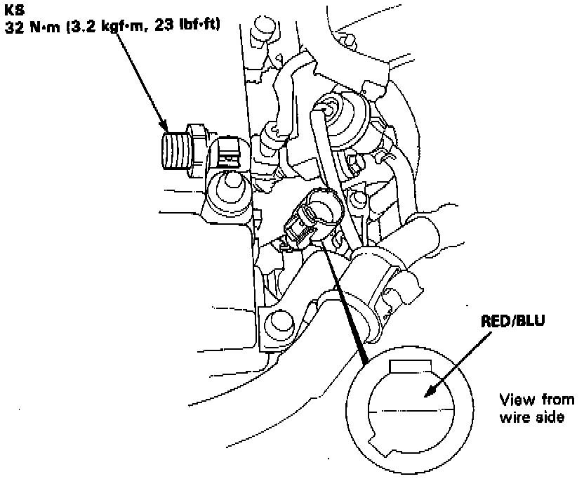

Knock Sensor: Service and Repair
Knock Sensor Location:

WARNING: Perform this on a engine that has cooled to prevent burns.
1. Disconnect 1-wire (RED/BLU) connector from Knock Sensor.
2. Remove Knock Sensor from cylinder head.
3. Install new knock sensor, torque to 32 Nm (23 ft lb).
4. Re-connect 1-wire connector to sensor.